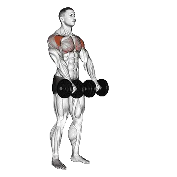

Dumbbell Front Raise
Dumbbell Front Raise shows average weight and strength standards as a reference for shoulders. Primary muscles: Deltoids.

Average weight: Intermediate
Reference for an intermediate lifter.
Men
39 lb
Women
23 lb
Dumbbell Front Raise: Average weight [1RM]
| Level | ||
|---|---|---|
| Beginner | 7 lb | 4 lb |
| Novice | 19 lb | 11 lb |
| Intermediate | 39 lb | 23 lb |
| Advanced | 66 lb | 38 lb |
| Elite | 98 lb | 56 lb |
Note: These standards are 1RM estimates based on average lifters. Bodyweight, age, and other personal factors can affect the values. See the detailed tables below.
Dumbbell Front Raise: Strength standards (lb)
Men by bodyweight (lb) [1RM]
| Bodyweight | Beginner | Novice | Intermediate | Advanced | Elite |
|---|---|---|---|---|---|
| 110 | 2 | 10 | 25 | 46 | 72 |
| 120 | 3 | 12 | 28 | 50 | 77 |
| 130 | 4 | 14 | 30 | 53 | 81 |
| 140 | 5 | 15 | 32 | 56 | 85 |
| 150 | 6 | 17 | 35 | 59 | 88 |
| 160 | 6 | 18 | 37 | 62 | 92 |
| 170 | 7 | 20 | 39 | 64 | 95 |
| 180 | 8 | 21 | 41 | 67 | 98 |
| 190 | 9 | 23 | 43 | 70 | 101 |
| 200 | 10 | 24 | 45 | 72 | 104 |
| 210 | 11 | 25 | 47 | 74 | 107 |
| 220 | 12 | 27 | 48 | 77 | 110 |
| 230 | 13 | 28 | 50 | 79 | 112 |
| 240 | 14 | 29 | 52 | 81 | 115 |
| 250 | 14 | 30 | 54 | 83 | 117 |
| 260 | 15 | 32 | 55 | 85 | 120 |
| 270 | 16 | 33 | 57 | 87 | 122 |
| 280 | 17 | 34 | 58 | 89 | 124 |
| 290 | 18 | 35 | 60 | 91 | 127 |
| 300 | 19 | 36 | 61 | 93 | 129 |
| 310 | 19 | 38 | 63 | 95 | 131 |
Men by age [1RM]
| Age | Beginner | Novice | Intermediate | Advanced | Elite |
|---|---|---|---|---|---|
| 15 | 6 | 16 | 33 | 56 | 83 |
| 20 | 7 | 19 | 38 | 64 | 95 |
| 25 | 7 | 19 | 39 | 66 | 98 |
| 30 | 7 | 19 | 39 | 66 | 98 |
| 35 | 7 | 19 | 39 | 66 | 98 |
| 40 | 7 | 19 | 39 | 66 | 98 |
| 45 | 7 | 18 | 37 | 62 | 92 |
| 50 | 6 | 17 | 35 | 58 | 87 |
| 55 | 6 | 16 | 32 | 54 | 80 |
| 60 | 5 | 15 | 29 | 49 | 73 |
| 65 | 5 | 13 | 27 | 45 | 66 |
| 70 | 4 | 12 | 24 | 40 | 59 |
| 75 | 4 | 11 | 21 | 36 | 53 |
| 80 | 3 | 9 | 19 | 32 | 48 |
| 85 | 3 | 8 | 17 | 29 | 43 |
| 90 | 3 | 8 | 15 | 26 | 38 |
Women by bodyweight (lb) [1RM]
| Bodyweight | Beginner | Novice | Intermediate | Advanced | Elite |
|---|---|---|---|---|---|
| 90 | 2 | 8 | 18 | 31 | 47 |
| 100 | 3 | 9 | 19 | 33 | 49 |
| 110 | 3 | 9 | 20 | 34 | 51 |
| 120 | 4 | 10 | 21 | 35 | 53 |
| 130 | 4 | 11 | 22 | 37 | 54 |
| 140 | 4 | 12 | 23 | 38 | 56 |
| 150 | 5 | 12 | 24 | 39 | 57 |
| 160 | 5 | 13 | 25 | 40 | 59 |
| 170 | 5 | 13 | 25 | 41 | 60 |
| 180 | 6 | 14 | 26 | 42 | 61 |
| 190 | 6 | 14 | 27 | 43 | 62 |
| 200 | 7 | 15 | 28 | 44 | 63 |
| 210 | 7 | 15 | 28 | 45 | 64 |
| 220 | 7 | 16 | 29 | 46 | 65 |
| 230 | 8 | 16 | 30 | 46 | 66 |
| 240 | 8 | 17 | 30 | 47 | 67 |
| 250 | 8 | 17 | 31 | 48 | 68 |
| 260 | 8 | 18 | 31 | 49 | 69 |
Women by age [1RM]
| Age | Beginner | Novice | Intermediate | Advanced | Elite |
|---|---|---|---|---|---|
| 15 | 4 | 10 | 19 | 32 | 48 |
| 20 | 4 | 11 | 22 | 37 | 55 |
| 25 | 4 | 11 | 23 | 38 | 56 |
| 30 | 4 | 11 | 23 | 38 | 56 |
| 35 | 4 | 11 | 23 | 38 | 56 |
| 40 | 4 | 11 | 23 | 38 | 56 |
| 45 | 4 | 11 | 22 | 36 | 53 |
| 50 | 4 | 10 | 20 | 34 | 50 |
| 55 | 3 | 9 | 19 | 31 | 46 |
| 60 | 3 | 9 | 17 | 29 | 42 |
| 65 | 3 | 8 | 15 | 26 | 38 |
| 70 | 3 | 7 | 14 | 23 | 34 |
| 75 | 2 | 6 | 12 | 21 | 31 |
| 80 | 2 | 6 | 11 | 19 | 27 |
| 85 | 2 | 5 | 10 | 17 | 25 |
| 90 | 2 | 4 | 9 | 15 | 22 |
Note: Dumbbell weights in the table are for one dumbbell.
Muscles worked
| Group | Muscles |
|---|---|
| Primary muscles | Deltoids |
| Secondary muscles | Deltoids, Trapezius |
| Stabilizers | External obliques, Trapezius |
| Grip | Forearm flexors |
Track and analyze in the Shiba app
Review weight, reps, and progress in one place.
World records
Last Updated: July 2, 2026
How to read the table
| Level | Description | Distribution |
|---|---|---|
| Beginner | Has learned proper form and trained consistently for at least 1 month. | Bottom 5% |
| Novice | Has trained consistently for at least 6 months. | Top 80% |
| Intermediate | Has trained consistently for at least 2 years. | Top 50% |
| Advanced | Has trained consistently for more than 5 years. | Top 20% |
| Elite | Has specialized in this exercise for more than 5 years. | Top 5% |
More exercises
Full body
Deadlift
Full body / BIG3
Bench Press
Full body / BIG3
Squat
Full body / BIG3
Hex Bar Deadlift
Full body
Power Clean
Full body
Romanian Deadlift
Full body
Sumo Deadlift
Full body
Clean And Jerk
Full body
Snatch
Full body
Clean
Full body
Clean And Press
Full body
Rack Pull
Full body
Dumbbell Romanian Deadlift
Full body / Dumbbell
Hang Clean
Full body
Stiff-Leg Deadlift
Full body
Muscle-Up
Full body / Bodyweight
Power Snatch
Full body
Thruster
Full body
Push Jerk
Full body
Dumbbell Deadlift
Full body / Dumbbell
Deficit Deadlift
Full body
Single-Leg Romanian Deadlift
Full body
Burpees
Full body / Bodyweight
Hang Power Clean
Full body
Split Jerk
Full body
Dumbbell Snatch
Full body / Dumbbell
Clean High Pull
Full body
Snatch Deadlift
Full body
Clean Pull
Full body
Paused Deadlift
Full body
Single-Leg Deadlift
Full body
Muscle Snatch
Full body
Jefferson Deadlift
Full body
Snatch Pull
Full body
Wall Ball
Full body
Zercher Deadlift
Full body
Single-Leg Dumbbell Deadlift
Full body / Dumbbell
Dumbbell Clean And Press
Full body / Dumbbell
Ring Muscle-Up
Full body / Bodyweight
Dumbbell Thruster
Full body / Dumbbell
Hang Snatch
Full body
Dumbbell High Pull
Full body / Dumbbell
Dumbbell Hang Clean
Full body / Dumbbell
Behind-The-Back Deadlift
Full body
Clap Pull-Up
Full body
Squat Thrust
Full body
Chest
Bench Press
Chest / BIG3
Dumbbell Bench Press
Chest / Dumbbell
Push-Up
Chest / Bodyweight
Incline Bench Press
Chest
Incline Dumbbell Bench Press
Chest / Dumbbell
Close-Grip Bench Press
Chest
Machine Chest Fly
Chest / Machine
Dumbbell Fly
Chest / Dumbbell
Decline Dumbbell Fly
Chest / Dumbbell
Decline Bench Press
Chest
Smith Machine Bench Press
Chest / Machine
Cable Fly
Chest / Cable
Chest Press
Chest
Floor Press
Chest
Incline Dumbbell Fly
Chest / Dumbbell
Dumbbell Floor Press
Chest / Dumbbell
Decline Dumbbell Bench Press
Chest / Dumbbell
Paused Bench Press
Chest
One-Arm Push-Up
Chest / Bodyweight
Reverse-Grip Bench Press
Chest
Diamond Push-Up
Chest / Bodyweight
Close-Grip Dumbbell Bench Press
Chest / Dumbbell
Bench Pin Press
Chest
Wide-Grip Bench Press
Chest
Decline Push-Up
Chest / Bodyweight
Close-Grip Incline Bench Press
Chest
Incline Push-Up
Chest / Bodyweight
Close-Grip Push-Up
Chest / Bodyweight
Archer Push-Up
Chest / Bodyweight
Spoto Press
Chest
Back
Deadlift
Back / BIG3
Pull-Up
Back / Bodyweight
Bent-Over Row
Back
Lat Pulldown
Back
Chin Ups
Back / Bodyweight
Dumbbell Row
Back / Dumbbell
Seated Cable Row
Back / Cable
Barbell Shrug
Back / Barbell
T-Bar Row
Back
Dumbbell Shrug
Back / Dumbbell
Pendlay Row
Back
Machine Row
Back / Machine
Dumbbell Pullover
Back / Dumbbell
Dumbbell Reverse Fly
Back / Dumbbell
Chest-Supported Dumbbell Row
Back / Dumbbell
Close-Grip Lat Pulldown
Back
Machine Reverse Fly
Back / Machine
Reverse-Grip Lat Pulldown
Back
Neutral-Grip Pull-Up
Back / Bodyweight
Straight-Arm Pulldown
Back
Cable Reverse Fly
Back / Cable
Yates Row
Back
Bent-Over Dumbbell Row
Back / Dumbbell
Back Extension
Back
Bench Pull
Back
Machine Back Extension
Back / Machine
Barbell Pullover
Back / Barbell
One-Arm Pull-Up
Back / Bodyweight
Dumbbell Bench Pull
Back / Dumbbell
Inverted Row
Back
Renegade Row
Back
One-Arm Lat Pulldown
Back
One-Arm Seated Cable Row
Back / Cable
Cable Upright Row
Back / Cable
Machine Shrug
Back / Machine
Hex Bar Shrug
Back
Smith Machine Shrug
Back / Machine
Dumbbell Incline Y Raise
Back / Dumbbell
Cable Shrug
Back / Cable
Bent-Arm Barbell Pullover
Back / Barbell
Barbell Power Shrug
Back / Barbell
Meadows Row
Back
Behind-The-Back Barbell Shrug
Back / Barbell
Reverse Hyperextension
Back
Shoulders
Shoulder Press
Shoulders
Dumbbell Shoulder Press
Shoulders / Dumbbell
Dumbbell Lateral Raise
Shoulders / Dumbbell
Military Press
Shoulders
Seated Shoulder Press
Shoulders
Seated Dumbbell Shoulder Press
Shoulders / Dumbbell
Machine Shoulder Press
Shoulders / Machine
Push Press
Shoulders
Upright Row
Shoulders
Dumbbell Front Raise
Shoulders / Dumbbell
Cable Lateral Raise
Shoulders / Cable
Arnold Press
Shoulders
Face Pull
Shoulders
Neck Curl
Shoulders
Dumbbell Upright Row
Shoulders / Dumbbell
Machine Lateral Raise
Shoulders / Machine
Behind-The-Neck Press
Shoulders
Handstand Push-Up
Shoulders / Bodyweight
Barbell Front Raise
Shoulders / Barbell
Log Press
Shoulders
Landmine Press
Shoulders
Neck Extension
Shoulders
Z Press
Shoulders
Viking Press
Shoulders
Shoulder Pin Press
Shoulders
Dumbbell Z Press
Shoulders / Dumbbell
One-Arm Landmine Press
Shoulders
Dumbbell External Rotation
Shoulders / Dumbbell
Pike Push-Up
Shoulders / Bodyweight
Dumbbell Push Press
Shoulders / Dumbbell
Dumbbell Face Pull
Shoulders / Dumbbell
Cable External Rotation
Shoulders / Cable
Arms
Dumbbell Curl
Arms / Dumbbell
Barbell Curl
Arms / Barbell
Hammer Curl
Arms
EZ Bar Curl
Arms
Preacher Curl
Arms
Cable Bicep Curl
Arms / Cable
Dumbbell Concentration Curl
Arms / Dumbbell
Incline Dumbbell Curl
Arms / Dumbbell
Machine Bicep Curl
Arms / Machine
Strict Curl
Arms
One-Arm Cable Bicep Curl
Arms / Cable
One-Arm Dumbbell Preacher Curl
Arms / Dumbbell
Incline Hammer Curl
Arms
Spider Curl
Arms
Zottman Curl
Arms
Seated Dumbbell Curl
Arms / Dumbbell
Cheat Curl
Arms
Cable Hammer Curl
Arms / Cable
Overhead Cable Curl
Arms / Cable
Incline Cable Curl
Arms / Cable
Lying Cable Curl
Arms / Cable
Dips
Arms / Bodyweight
Tricep Pushdown
Arms
Lying Tricep Extension
Arms
Tricep Rope Pushdown
Arms
One-Arm Pulldown
Arms
Dumbbell Tricep Extension
Arms / Dumbbell
Tricep Extension
Arms
Lying Dumbbell Tricep Extension
Arms / Dumbbell
Seated Dips Machine
Arms / Machine
Dumbbell Tricep Kickback
Arms / Dumbbell
Cable Overhead Tricep Extension
Arms / Cable
Machine Tricep Extension
Arms / Machine
Seated Dumbbell Tricep Extension
Arms / Dumbbell
Reverse-Grip Tricep Pushdown
Arms
JM Press
Arms
Tate Press
Arms
Ring Dips
Arms / Bodyweight
Bench Dip
Arms / Bodyweight
Wrist Curl
Arms
Reverse Barbell Curl
Arms / Barbell
Reverse Wrist Curl
Arms
Dumbbell Wrist Curl
Arms / Dumbbell
Dumbbell Reverse Wrist Curl
Arms / Dumbbell
Dumbbell Reverse Curl
Arms / Dumbbell
Legs
Squat
Legs / BIG3
Sled Leg Press
Legs
Front Squat
Legs
Hip Thrust
Legs
Leg Extension
Legs
Horizontal Leg Press
Legs
Hack Squat
Legs
Seated Leg Curl
Legs
Dumbbell Bulgarian Split Squat
Legs / Dumbbell
Goblet Squat
Legs
Lying Leg Curl
Legs
Machine Calf Raise
Legs / Machine
Dumbbell Lunge
Legs / Dumbbell
Box Squat
Legs
Bodyweight Squat
Legs
Vertical Leg Press
Legs
Bulgarian Split Squat
Legs
Seated Calf Raise
Legs
Smith Machine Squat
Legs / Machine
Hip Abduction
Legs
Good Morning
Legs
Zercher Squat
Legs
Barbell Lunge
Legs / Barbell
Hip Adduction
Legs
Overhead Squat
Legs
Barbell Calf Raise
Legs / Barbell
Dumbbell Squat
Legs / Dumbbell
Split Squat
Legs
Dumbbell Calf Raise
Legs / Dumbbell
Cable Pull-Through
Legs / Cable
Standing Leg Curl
Legs
Landmine Squat
Legs
Barbell Reverse Lunge
Legs / Barbell
Barbell Glute Bridge
Legs / Barbell
Single-Leg Press
Legs
Sled Press Calf Raise
Legs
Single-Leg Squat
Legs
Belt Squat
Legs
Safety Bar Squat
Legs
Pistol Squat
Legs
Paused Squat
Legs
Barbell Hack Squat
Legs / Barbell
Sumo Squat
Legs
Cable Kickback
Legs / Cable
Bodyweight Calf Raise
Legs
Lunge
Legs
Glute Bridge
Legs
Pin Squat
Legs
Walking Lunge
Legs
Dumbbell Front Squat
Legs / Dumbbell
Dumbbell Split Squat
Legs / Dumbbell
Reverse Lunge
Legs
Squat Jump
Legs
Nordic Hamstring Curl
Legs
Sissy Squat
Legs
Half Squat
Legs
Glute Ham Raise
Legs
Cable Leg Extension
Legs / Cable
Single-Leg Seated Calf Raise
Legs
Side Lunge
Legs
Glute Kickback
Legs
Donkey Calf Raise
Legs
Dumbbell Walking Calf Raise
Legs / Dumbbell
Side Leg Raise
Legs / Bodyweight
Jefferson Squat
Legs
Floor Hip Abduction
Legs
Hip Extension
Legs
Floor Hip Extension
Legs
Core
Sit-Up
Core / Bodyweight
Cable Crunches
Core / Cable
Machine Seated Crunches
Core / Machine
Crunches
Core / Bodyweight
Dumbbell Side Bend
Core / Dumbbell
Cable Woodchopper
Core / Cable
Hanging Leg Raise
Core / Bodyweight
Russian Twist
Core / Bodyweight
Lying Leg Raise
Core / Bodyweight
Decline Sit-Up
Core / Bodyweight
Hanging Knee Raise
Core / Bodyweight
AB Wheel Roller
Core
Toes To Bar
Core / Bodyweight
Decline Crunches
Core / Bodyweight
Jumping Jack
Core / Bodyweight
Bicycle Crunches
Core / Bodyweight
Reverse Crunches
Core / Bodyweight
Flutter Kicks
Core / Bodyweight
Mountain Climbers
Core / Bodyweight
High Pulley Crunches
Core / Bodyweight
Standing Cable Crunches
Core / Cable
Superman
Core / Bodyweight
Side Crunch
Core / Bodyweight
Roman Chair Side Bend
Core
Scissor Kick
Core / Bodyweight